Name: Math 243: Calculus C
Exam 1 solution guide
28 February 2002
Yes, mathematics has two faces; it is the rigorous science of
Euclid but it is also something else. Mathematics presented in the
Euclidean way appears as a systematic, deductive science; but
mathematics in the making appears as an experimental, inductive
science.
- from ``How to Solve It'' by G. Polya
Instructions: Show all work to receive full or partial credit. You may use a scientific calculator on this exam. All University rules and guidelines for student conduct are applicable.
We must find a normal vector to the plane and a point in the plane. Since we already have three points in the plane, the only work we have to do is to find a normal vector. Subtracting the second point from the first, and the third from the first, we obtain two vectors lying along the plane:
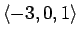
and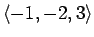
. To find a normal vector, we need a vector that is perpendicular to both of these vectors. Thus,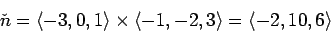
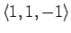
and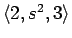
orthogonal?
Two vectors are orthogonal if and only if their dot product is zero.
So,
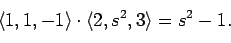
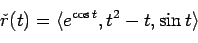
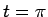
.
To find the equation of a line, we need a point on the line and a
direction vector. To find the point on the line, we will use
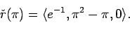
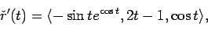
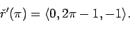
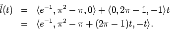
Seeing the quadratic equation, we can put this expression into a
recognizable form by completing the square:
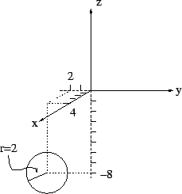
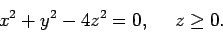
This is the top half of a cone, scaled as shown. (Again, I used a figure drawing package.)
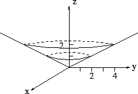
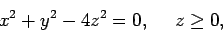
For cylindrical coordinates, we can substitute r2 for x2 + y2to obtain the simple relation r2 = 4z2. Since we know that zmust be positive, we can take the square root of both sides to get r = 2z, and we know that
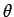
has no restrictions because the surface is symmetric about the z axis.
For spherical coordinates, we can see by inspection that and
are unrestricted. The cone is generated by fixing an angle
and then allowing and to vary over their full
range. To find the angle, , we can apply some trigonometry.
For instance, we know that in the yz-plane, the edge of the cone
passes through the point (0,2,1). Thus,
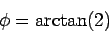